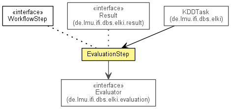

de.lmu.ifi.dbs.elki.workflow
Class EvaluationStep
java.lang.Object
 de.lmu.ifi.dbs.elki.workflow.EvaluationStep
de.lmu.ifi.dbs.elki.workflow.EvaluationStep
- All Implemented Interfaces:
- InspectionUtilFrequentlyScanned, Parameterizable, WorkflowStep
public class EvaluationStep
- extends Object
- implements WorkflowStep

The "evaluation" step, where data is analyzed.
| Methods inherited from class java.lang.Object |
clone, equals, finalize, getClass, hashCode, notify, notifyAll, toString, wait, wait, wait |
evaluators
private List<Evaluator> evaluators
- Evaluators to run
result
private HierarchicalResult result
- The result we last processed.
EvaluationStep
public EvaluationStep(List<Evaluator> evaluators)
- Constructor.
- Parameters:
evaluators -
runEvaluators
public void runEvaluators(HierarchicalResult r,
Database db)
getResult
public HierarchicalResult getResult()